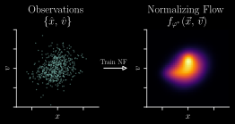
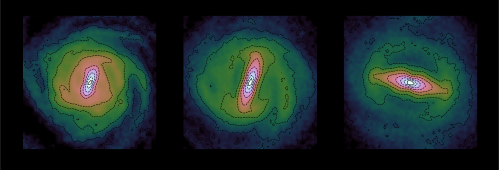
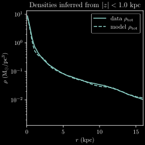
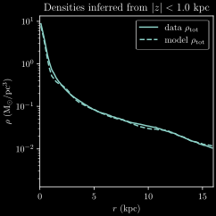
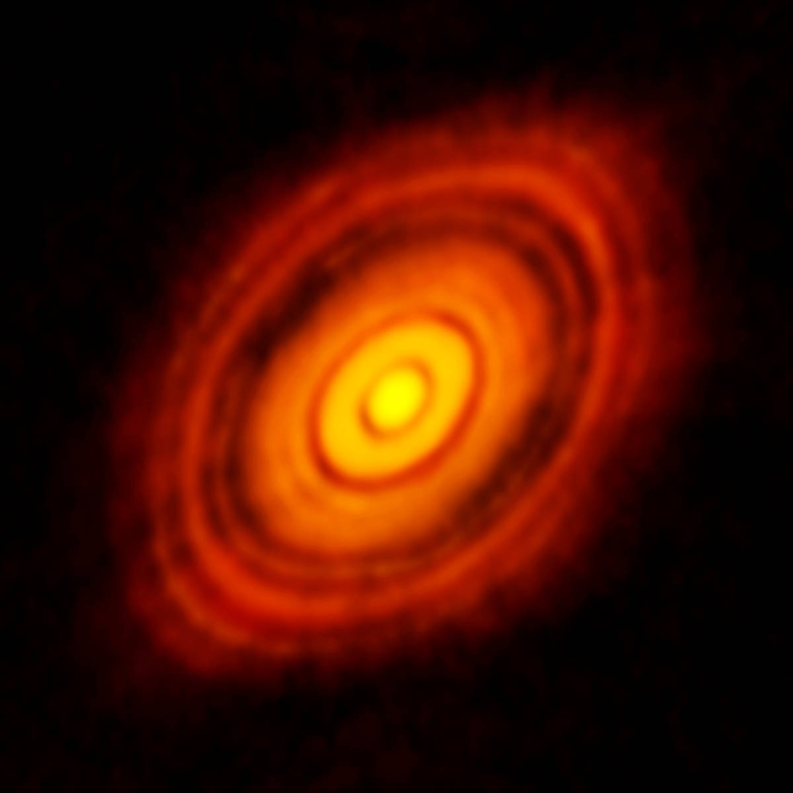
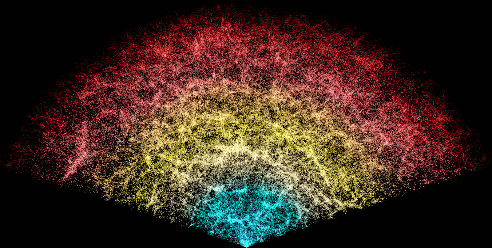
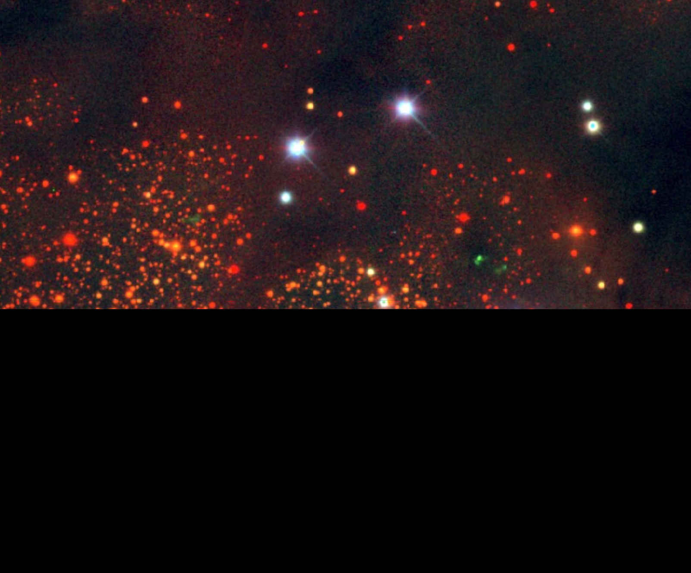
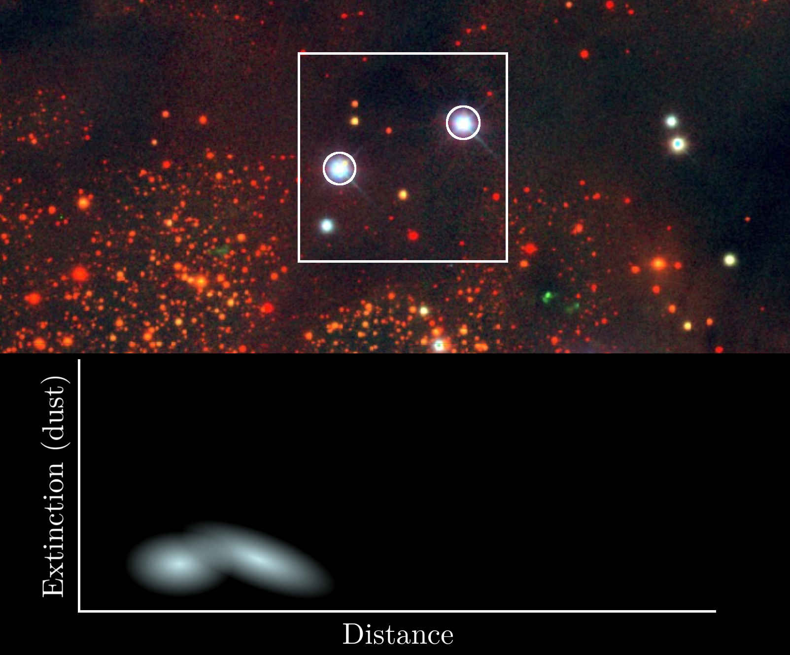
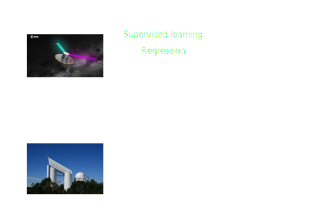

Milky Way Dynamics and Dust
U.C. Berkeley Astronomy
6 February 2025
Gregory M. Green
(Sofja Kovalevskaja Group Leader, MPIA, Heidelberg)

MPIA Dust and Dynamics Group

Gregory M. Green
group leader
Soumavo Ghosh
(former) postdoc
dynamics / barred galaxies
Xiangyu Zhang
PhD student
interstellar dust / low-res spectra
Taavet Kalda
PhD student
dynamics / machine learning
My academic path
Research Focus: The Milky Way
The Milky Way is the only galaxy that we can study star-by-star in such detail.
Most of the physical processes we study in astronomy are anchored in the Milky Way.
Large new surveys are revolutionizing our view of the Milky Way.
Dynamics
How is the dark matter distributed on sub-galactic scales?
3D distribution of stars and dust
What is the composition of the dust? How does it vary?
Computational methods
The richness and volume of the data requires more complex models, faster methods.
Dynamics
In collaboration with Taavet Kalda
PhD student
dynamics / machine learning
and Soumavo Ghosh
(former) postdoc
dynamics / barred galaxies
Gaia & Dynamics
Gaia & Dynamics
~30 million stars with high-quality, full 6D phase-space measurements.
Gaia & Dynamics
~30 million stars with high-quality, full 6D phase-space measurements.
How is mass distributed in the Milky Way?
Gaia & Dynamics
~30 million stars with high-quality, full 6D phase-space measurements.
How is mass distributed in the Milky Way?
(Cusp vs. core? Is the dark matter distribution clumpy? What is the local DM density?)
Gaia & Dynamics
~30 million stars with high-quality, full 6D phase-space measurements.
How is mass distributed in the Milky Way?
(Cusp vs. core? Is the dark matter distribution clumpy? What is the local DM density?)
What are the dynamics of the spiral arms and bar?
Dynamics
Gaia is delivering a snapshot of 6D stellar positions and velocities: $\left\{ \vec{x} , \vec{v} \right\}$
Accelerations tell us about the potential: $$ \frac{\mathrm{d}\vec{v}}{\mathrm{d}t} = -\nabla \Phi \left( \vec{x} \right) \, . $$
$\mathrm{d}\vec{v}/\mathrm{d}t$ is only rarely observable (as of yet).
Knowing $\Phi\left(\vec{x}\right)$ would tell us the distribution of total mass (Baryonic + dark) in the Milky Way.
How to connect $\Phi\left(\vec{x}\right)$ with $\left\{ \vec{x} , \vec{v} \right\}$? Stationarity.
Stationarity assumption
Galaxy doesn't statistically change over time.
Stationarity assumption
Galaxy doesn't statistically change over time.
Stationarity assumption
Galaxy doesn't statistically change over time.
Stationarity assumption
Galaxy doesn't statistically change over time.
Stationarity assumption
Galaxy doesn't statistically change over time.
Collisionless Boltzmann Equation (CBE):
$$ \frac{\mathrm{d}f}{\mathrm{d}t} = \phantom{\cancelto{0}{\frac{\partial f}{\partial t}}} \llap{\frac{\partial f}{\partial t}\hspace{0.63em}} + \sum_{\mathrm{dimension}\ i} \! \left( v_i \, \frac{\partial f}{\partial x_i} -\frac{\partial \Phi}{\partial x_i} \frac{\partial f}{\partial v_i} \right) = 0 \, . $$
$$ \frac{\mathrm{d}f}{\mathrm{d}t} = {\color{red}\cancelto{0}{{\color{white}\frac{\partial f}{\partial t}}}} + \sum_{\mathrm{dimension}\ i} \! \left( v_i \, \frac{\partial f}{\partial x_i} -\frac{\partial \Phi}{\partial x_i} \frac{\partial f}{\partial v_i} \right) = 0 \, . $$
We need to be able to calculate gradients of the distribution function:
$$ \require{color} \sum_{\mathrm{dimension}\ i} \! \left( v_i \, {\color{cyan} \frac{\partial f}{\partial x_i}} -\frac{\partial \Phi}{\partial x_i} {\color{cyan} \frac{\partial f}{\partial v_i}} \right) = 0 \, . $$
Our parameterization of the potential needs to be easily differentiable:
$$ \sum_{\mathrm{dimension}\ i} \! \left( v_i \, \frac{\partial f}{\partial x_i} -{\color{lightgreen} \frac{\partial \Phi}{\partial x_i}} \frac{\partial f}{\partial v_i} \right) = 0 \, . $$
A new method for determining the potential: “Deep Potential”

Fitting the distribution function
Normalizing flows
Compute gradients of the distribution function

Normalizing flows are differentiable.
In Tensorflow, it's as simple as
with tf.GradientTape() as g:
g.watch(eta)
f = flow(eta)
df_deta = g.gradient(f, eta)
Fitting the potential

Represent $\Phi$ as a neural network: $\Phi_{\theta} \left( \vec{x} \right)$.
⇒ auto-differentiable: $\frac{\partial \Phi}{\partial \vec{x}}$.
$N$-body simulation of a barred galaxy
Stationarity in a fixed frame
Stationarity in a rotating frame
$$\frac{\partial f}{\partial t} = 0$$
$$ \frac{\partial f}{\partial t} + \left[ \vec{\Omega} \!\times\! \left( \vec{x}\!-\!\vec{x}_0 \right) \!+\! \vec{v}_0 \right] \!\cdot\! \frac{\partial f}{\partial \vec{x}} + \vec{\Omega} \!\times\! \left( \vec{v}\!-\!\vec{v}_0 \right) \!\cdot\! \frac{\partial f}{\partial \vec{v}} = 0 $$
We can infer the rotation ($\vec{\Omega}$) while fitting the potential.
1. Fit distribution function
2. Fit gravitational potential
Density: $\rho = \nabla^2 \Phi / \left(4\pi G\right)$

 


Radial density profile
$\rho\left(r\right)$
Subtract stars from modeled density to obtain dark-matter density.
Applying Deep Potential to the Milky Way
The selection function matters!
Modeling the 6D distribution function
Kalda & Green, in prep.
Modeling the 6D distribution function
Kalda & Green, in prep.
Predicted accelerations
Accelerations obtained from modeled potential: $\vec{a} = -\nabla \Phi$.
Kalda & Green, in prep.

Gaia data will get even better
- DR3 (June 2022): 34 months of data.
- DR4 (late 2026): 66 months of data, many more raw spectra.
- DR5 (2030?): 120 months of data.
Error scalings with survey time:
$\sigma_{\varpi} \propto T^{-1/2}$. DR5 parallax errors ~50% of DR3.
$\sigma_{\mu} \propto T^{-3/2}$. DR5 proper-motion errors ~15% of DR3.
Interstellar dust
“Love it or hate it”
Some astrophysics affected by dust...

Planet formation


Large-scale structure

Zooming in on a dust cloud in the Milky Way
A 2D map of dust
Schlegel, Finkbeiner & Davis (1998)
Interstellar Dust in 3D
Mapping dust along one sightline
Mapping dust along one sightline

Mapping dust along one sightline

Mapping dust along one sightline
Mapping dust along one sightline

Mapping dust along one sightline

Mapping dust along one sightline

Mapping dust along one sightline

Mapping dust along one sightline

Mapping dust along one sightline

Apply this method across millions of sightlines ...


Face-on projection of dust in the Milky Way midplane
(Green et al 2019, 942 citations)
My dust maps have become standard reference works in astronomy.
- Correcting observations for the effect of extinction.
- Determining distances — and therefore physical properties — of molecular clouds.
How do dust properties vary?
The dust “extinction curve”

The dust “extinction curve”

The extinction curve and grain-size distribution
Dust density
Dust properties
Dust mapping
Learning R(V) for 130 million stars
Zhang, Hensley & Green (arXiv:2407.14594, accepted by Science)
In collaboration with Xiangyu Zhang
PhD student
interstellar dust / low-res spectra
Gaia BP/RP spectrophotometry
(“XP spectra”)


- $R \sim 50-160$
- slitless spectroscopy
- optical (330—1050 nm)
- 220 million stars (in DR3)
- All-sky, flux-calibrated
How to extract astrophysical information from these spectra?

How to extract astrophysical information from these spectra?

How to extract astrophysical information from these spectra?
How to extract astrophysical information from these spectra?

Structure of forward model of stellar spectra

Model vs. Observations
Train model with 2.4 million stars ...


Learned stellar models of Gaia XP spectra

Learned stellar parameters
Use XP spectra, NIR photometry & Gaia parallaxes to learn parameters of 220 million stars.
LAMOST spectra not used for parameter inference.
Infer dust R(V) for every star ...
Remove stars with bad $\chi^2/\mathrm{dof}$, low extinction, ...
~130 million R(V) measurements with XP (Zhang & Green 2024)

U-shaped relation: density vs. R(V):


Ophiuchus is different.
Connection between high R(V) and star formation / UV radiation?


R(V) in the Magellanic Clouds

For the first time, we can “see” the dust properties throughout much of the Milky Way in 3D.
Surprising results:
- U-shaped relation between density & R(V).
- Star-formation / UV radiation correlated with high R(V).
Implications for dust composition
Zhang, Hensley & Green (2025, ApJL)
The traditional view is that the grain-size distribution sets the slope of the extinction curve.
We find evidence that a different process dominates at intermediate densities.
C19H11 from PAHdb
Polycyclic Aromatic Hydrocarbons (PAHs)
→* electronic transitions in the UV (responsible for 2175 extinction feature?).
Hensley & Draine (2023) dust model.
As PAH mass increases, optical extinction becomes steeper (R(V) decreases).
Requires less mass to change R(V) than accretion onto silicates.
Importance of 2175 bump.
R(V) vs. PAH fraction in the Large Magellanic Cloud


R(V) vs. PAH fraction in the Large Magellanic Cloud
Ionizing radiation destroys PAHs in star-forming regions ⇒ high R(V).
At intermediate densities, growth of PAHs seems to drive R(V) variation.
This significant revision of the prevailing view was made possible by our dust R(V) measurements of 130 million sightlines.
We aim to follow-up this hypothesis with JWST observations.
Is there information in the extinction curve beyond R(V)?
Green, Zhang, & Zhang (arXiv:2410.22537)
Component decomposition of extinction curves

Component decomposition of extinction curves

Component decomposition of extinction curves

“Dust-like” spatial patterns in lowest-order components


Two extinction features
Both features are far wider than any DIB.
The feature at 850 nm is new.
The extinction curve contains information about the detailed chemistry of the ISM.
We are only at the beginning — much more can be learned about ISM chemistry from Gaia and similar surveys.
Low-resolution spectra from the UV to the mid-IR

Low-resolution spectra from the UV to the mid-IR

Low-resolution spectra from the UV to the mid-IR

Low-resolution spectra from the UV to the mid-IR
What dust chemistry drives extinction-curve variation? What is the origin of variations beyond R(V)?
What what can we learn about the evolution of the ISM?
Is there a relation to diffuse interstellar bands?
Better 3D maps of dust extinction in the Milky Way.
Computational methods
Computational methods
Machine-learning tools are powerful.
Large, flexible models. GPU computing. Automatic derivatives.
Computational methods
Machine-learning tools are powerful.
Large, flexible models. GPU computing. Automatic derivatives.
... but best applied in physically principled ways:
Solving physical equations. Models with correct causal structure. Rigorous statistical inference.
Computational methods
Machine-learning tools are powerful.
Large, flexible models. GPU computing. Automatic derivatives.
... but best applied in physically principled ways:
Solving physical equations. Models with correct causal structure. Rigorous statistical inference.